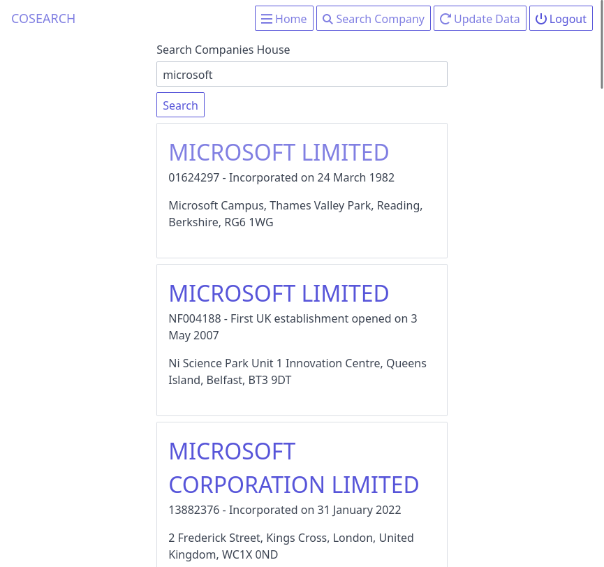

Cosearch is a front end for Companies House API.
It was created to provide a quick solution for checking multiple companies details, without having to use an overblown CRM for practice accountants.
It provides a simple search and follow interface, with summary information. You can also explored all the data offered up by the API
View summary data easily. A quick reference table shows you key information about the legal entity. The table can be filtered using the search function.
Search for all companies in the Companies House database.
Take a look at the all the data available from the API.